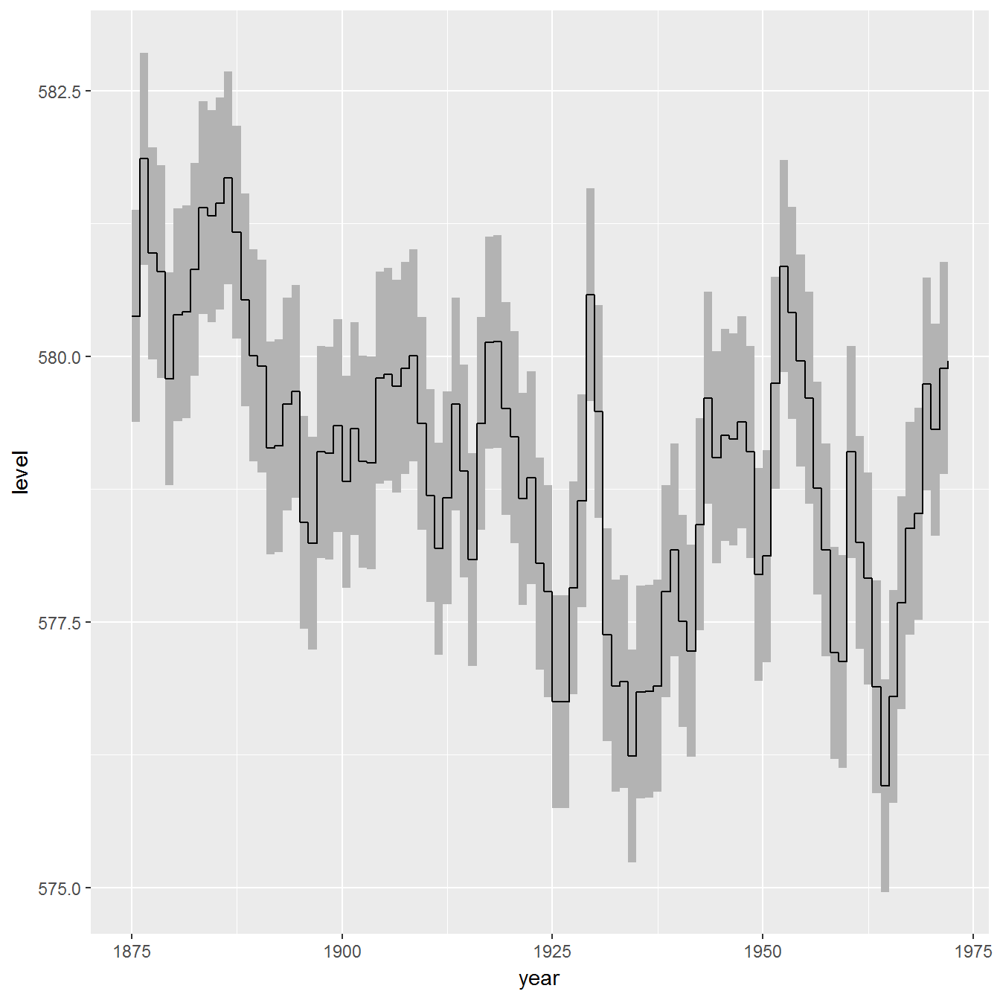
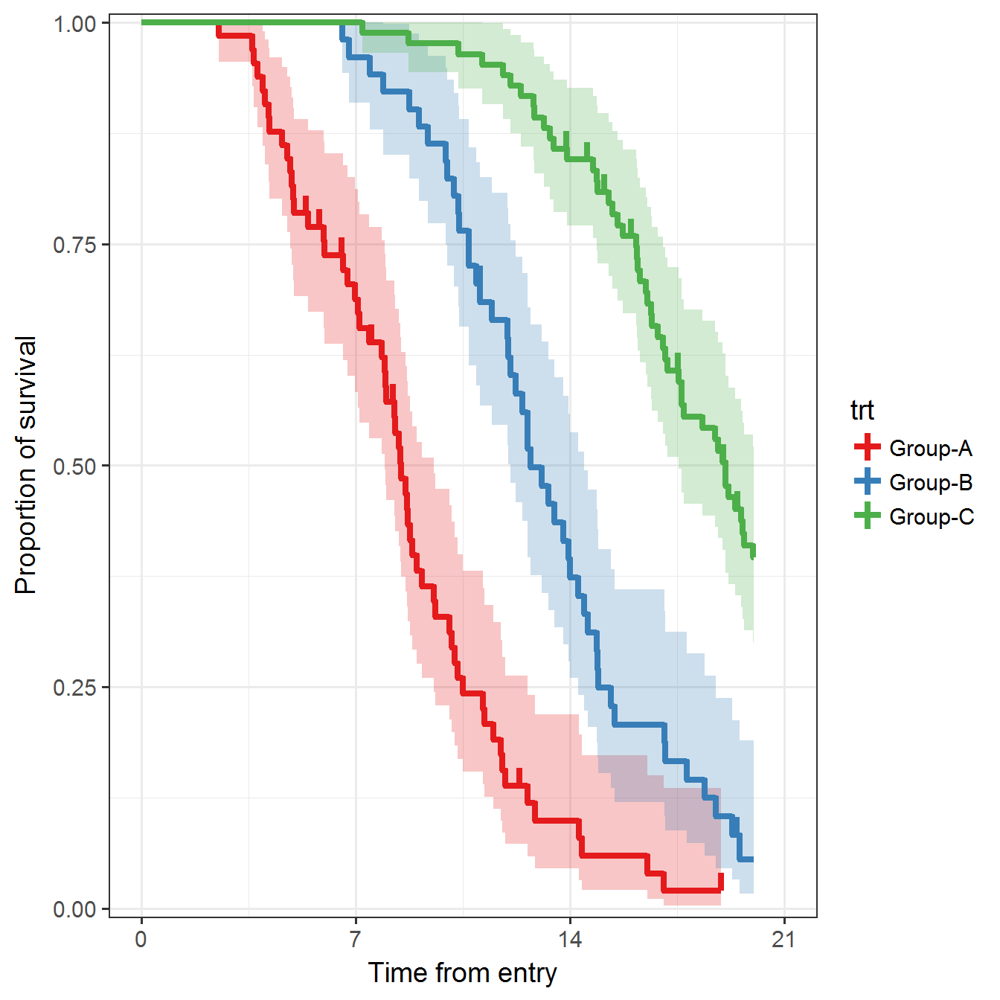

geom_stepribbonThe geom_stepribbon is an extension of the geom_ribbon, and is optimized for Kaplan-Meier plots with pointwise confidence intervals or a confidence band.
geom_stepribbon(mapping = NULL, data = NULL, stat = "identity",
position = "identity", na.rm = FALSE, show.legend = NA,
inherit.aes = TRUE, kmplot = FALSE, ...)kmplot
TRUE, missing values are replaced by the previous values. This option is needed to make Kaplan-Meier plots if the last observation has an event, in which case the upper and lower values of the last observation are missing. This processing is optimized for results from the survfit function.Other arguments are the same as the geom_ribbon.
require("ggplot2")## Loading required package: ggplot2huron <- data.frame(year = 1875:1972, level = as.vector(LakeHuron))
h <- ggplot(huron, aes(year))
h + RcmdrPlugin.KMggplot2::geom_stepribbon(
aes(ymin = level - 1, ymax = level + 1),
fill = "grey70"
) +
geom_step(aes(y = level))
h + geom_ribbon(
aes(ymin = level - 1, ymax = level + 1),
fill = "grey70"
) +
geom_line(aes(y = level))data(dataKm, package = "RcmdrPlugin.KMggplot2")
.df <- na.omit(data.frame(x = dataKm$time, y = dataKm$event, z = dataKm$trt))
.df <- .df[do.call(order, .df[, c("z", "x"), drop = FALSE]), , drop = FALSE]
.fit <- survival::survfit(
survival::Surv(time = x, event = y, type = "right") ~ z, .df)
.fit <- data.frame(x = .fit$time, y = .fit$surv, nrisk = .fit$n.risk,
nevent = .fit$n.event, ncensor= .fit$n.censor, upper = .fit$upper,
lower = .fit$lower)
.df <- .df[!duplicated(.df[,c("x", "z")]), ]
.df <- .fit <- data.frame(.fit, .df[, c("z"), drop = FALSE])
.df <- .fit <- rbind(unique(data.frame(x = 0, y = 1, nrisk = NA, nevent = NA,
ncensor = NA, upper = 1, lower = 1, .df[, c("z"), drop = FALSE])), .fit)
.cens <- subset(.fit, ncensor == 1)
ggplot(data = .fit, aes(x = x, y = y, colour = z)) +
RcmdrPlugin.KMggplot2::geom_stepribbon(data = .fit,
aes(x = x, ymin = lower, ymax = upper, fill = z), alpha = 0.25,
colour = "transparent", show.legend = FALSE, kmplot = TRUE) +
geom_step(size = 1.5) +
geom_linerange(data = .cens, aes(x = x, ymin = y, ymax = y + 0.02),
size = 1.5) +
scale_x_continuous(breaks = seq(0, 21, by = 7), limits = c(0, 21)) +
scale_y_continuous(limits = c(0, 1), expand = c(0.01, 0)) +
scale_colour_brewer(palette = "Set1") +
scale_fill_brewer(palette = "Set1") +
xlab("Time from entry") +
ylab("Proportion of survival") +
labs(colour = "trt") +
theme_bw(base_size = 14, base_family = "sans") +
theme(legend.position = "right")